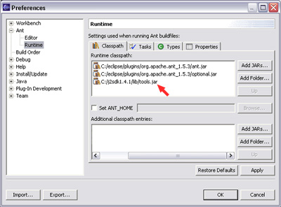

Automatización con Ant
Al desarrollar aplicaciones Java medianamente complejas, una vez escrito el código fuente, para construir la aplicación normalmente tendremos que utilizar varias herramientas (javac, jar, rmic, java, etc). Además será conveniente crear una estructura de directorios donde tengamos por separado los ficheros fuente, las clases compiladas, las librerías y cualquier otro tipo de recursos, como por ejemplo el siguiente:
bin src lib resources
Esto nos obligará, cada vez que queramos construir la aplicación para probarla, a compilar las clases en el directorio adecuado, estableciendo la variable CLASSPATH para que incluya las librerías necesarias para compilar, copiar todos los recursos al directorio donde se haya construido la aplicación, realizar algún procesamiento adicional a los ficheros de código en caso de que sea necesario, empaquetar la aplicación y cualquier otra tarea que pueda ser necesaria.
Para facilitar la tarea de desarrollo de aplicaciones, podemos utilizar la herramienta Ant para automatizar todo este proceso.
Ant y Make
Ant es una herramienta basada en Java, similar a la herramienta make, pero más adecuada para el desarrollo de aplicaciones Java. Make tiene el inconveniente de ser dependiente del shell que utilicemos, ya que ejecuta comandos de éste, lo cual complicaría la portabilidad de nuestras aplicaciones a distintas plataformas. Uno de los objetivos que se han buscado desde el principio con las tecnologías Java es la independencia de la plataforma, por lo que será conveniente contar con un sistema de construcción de aplicaciones que cumpla este objetivo para que la portabilidad no se vea dañada.
Ant utiliza ficheros de configuración basados en XML, donde definiremos las tareas a realizar. Para realizar estas tareas se utilizarán clases Java, en lugar de comandos del shell, lo cual lo hará independiente de la plataforma. Podremos realizar un gran número de diferentes tareas con esta herramienta, de las que veremos las principales, y además es extensible, permitiéndonos añadir nuestras propias tareas que podremos implementar utilizando clases Java.
Estas tareas son las acciones que se ejecutarán desde dentro del fichero de configuración, y se definen en él como etiquetas en XML:
<mkdir dir="bin"/> <javac srcdir="src" destdir="bin"/>
De esta forma, en este ejemplo estaremos creando un directorio bin y a continuación estamos compilando todos los fuentes que tengamos en src guardando las clases compiladas en bin. Al definir estas acciones con este formato estándar, serán independientes de la plataforma.
El fichero de configuración, llamado build.xml, es bastante más complejo que un Makefile, pero podremos parametrizarlo, permitiéndonos reutilizar una misma plantilla genérica para distintas aplicaciones. Además, este fichero build.xml al utilizar una gramática de más alto nivel no tendrá el inconveniente de los tabuladores que encontramos en los Makefile (si en lugar de tabuladores usamos espacios no funcionan correctamente).
Para ejecutar este fichero build.xml deberemos ejecutar ant desde el directorio donde se encuentre este fichero
ant [objetivo]
Para que funcione correctamente deberemos establecer las variables de entorno ANT_HOME y JAVA_HOME apuntando a los directorios donde tengamos instalado Ant y Java 2 SDK respectivamente. Además para poder ejecutar el comando ant la variable PATH deberá apuntar al directorio de binarios de Ant:
PATH=${PATH}:${JAVA_HOME}/bin:${ANT_HOME}/bin
A continuación veremos cómo crear estos ficheros de configuración build.xml para trabajar con la herramienta Ant.
Estructura de un fichero build.xml
El elemento principal de un fichero build.xml es la etiqueta project que engloba todo el proyecto. Todo el contenido del fichero se encontrará dentro de esta etiqueta:
<project name="MiProyecto" default="run" basedir=".">
<description>
Ejemplo de fichero build.xml
</description>
<!-- Propiedades -->
...
<!-- Declaración de tareas -->
...
<!-- Objetivos -->
...
</project>
Dentro del proyecto encontramos los siguientes elementos:
- Propiedades: Nos permiten parametrizar el fichero build.xml. Podemos asignar valor a una serie de propiedades (atributos) que luego podremos utilizar dentro de este fichero.
- Declaración de tareas: Si queremos utilizar tareas adicionales, que no son propias de Ant, deberemos declararlas.
- Objetivos: Podemos definir una serie de objetivos (targets) para construir la aplicación, al igual que hacíamos en el Makefile. Para cada objetivo se definirán las tareas que se ejecutarán para cumplirlo, pudiendo establecer una dependencia entre los diferentes objetivos definidos.
En la etiqueta project indicaremos el nombre del proyecto al que corresponde este fichero build.xml, y además podremos establecer cuál será el objetivo a cumplir por defecto, si en la línea de comandos no se ha especificado ninguno.
Propiedades
Podemos definir una serie de propiedades para parametrizar estos ficheros de configuración de Ant. Estas propiedades son parejas <nombre, valor> donde normalmente el nombre se compone de una serie de palabras separadas por puntos y pueden tomar cualquier cadena como valor.
Podemos definir todas las propiedades que queramos, definiéndolas con nombres de este tipo, y asignarles un valor a cada una. Por ejemplo, podríamos definir una propiedad de nombre bin.home que contenga el nombre del directorio donde se guardará la aplicación compilada:
bin.home=bin
Posteriormente, podremos utilizar esta propiedad dentro del código de Ant. Para acceder al valor de la propiedad pondremos el nombre de ésta entre llaves precedido por el signo '$', de la forma ${nombre.propiedad}. Por ejemplo, cuando necesitemos crear el directorio para guardar la aplicación haremos:
<mkdir dir="${bin.home}"/>
De esta forma siempre que necesitemos especificar este directorio donde se va a construir la aplicación, en lugar de especificar directamente el nombre del directorio podemos utilizar la propiedad. De esta forma si queremos cambiar esto más adelante, será suficiente con modificar el valor de la propiedad, sin tener que ir cambiando este valor en cada lugar del fichero de configuración que aparezca.
Tenemos varias opciones para definir las propiedades y sus valores:
-
En el fichero build.xml. Al comienzo del fichero
build.xml, dentro del bloque project, podemos definir
estas propiedades de la siguiente forma:
<property name="bin.home" value="bin">
-
En un fichero independiente. También podemos definir
las propiedades en un fichero de propiedades, sin mezclarlas con el contenido
del fichero build.xml, de forma que si alguien quiere cambiarlas
no tenga que editar el código del build.xml. El fichero
de propiedades definirá en cada línea una propiedad, asignándole
su valor mediante el símbolo '='. Por ejemplo, podemos
llamar a este fichero build.properties, y en él podemos
tener el siguiente contenido:
bin.home=bin
Para que las propiedades aquí definidas puedan ser utilizadas dentro del fichero build.xml, deberemos importar el fichero de propiedades desde este fichero. Esto lo haremos mediante la siguiente etiqueta de definición de propiedades:
<property file="build.properties"/>
-
En la línea de comando. También podremos
establecer estas propiedades directamente desde la línea de comando
al invocar ant. Esto lo haremos mediante el parámetro
-D, con el que especificaremos nombre de la propiedad y valor:
ant -Dbin.home=bin
Si especificamos una propiedad en línea de comando, este valor tendrá preferencia sobre el valor que se haya definido dentro del fichero build.xml, si se ha definido alguno.
Declaración de tareas
Ant soporta un amplio conjunto de tareas predefinidas, que normalmente nos permitirán realizar todos los pasos necesarios para construir nuestra aplicación: compilar, copiar ficheros, empaquetar, ejecutar, etc.
Sin embargo, puede que necesitemos realizar alguna función que no venga implementada como tarea de Ant. Esto no será una limitación, ya que podremos añadir tareas adicionales que nos permitan realizar estas funciones. Estas tareas se implementarán en clases Java, que podremos desarrollar nosotros mismos, o bien obtener librerías de tareas proporcionadas por terceros.
Estas librerías de tareas consistirán normalmente en un fichero JAR que contenga todas las clases que implementan estas tareas que vamos a añadir. Para que Ant pueda localizar estas clases deberemos incluir esta librería en el CLASSPATH o bien copiarla al directorio ${ANT_HOME}/lib.
Una vez tenemos la librería de tareas localizable, para poder usarlas deberemos declararlas, indicando cuál es la clase principal que implementa cada tarea, y asignándole un nombre de dicha tarea. Declararemos estas tareas dentro del fichero build.xml donde vayamos a usarlas de la siguiente forma:
<taskdef name="mitarea"classname=
"es.ua.j2ee.tareas.MiTarea"/>
Posteriormente, en el fichero build.xml podremos ejecutar esta tarea como cualquier otra tarea definida en Ant:
<mitarea <atributos>/>
Objetivos
En el fichero build.xml podremos definir una serie de objetivos, y dentro de cada uno especificar las tareas que se deben realizar para cumplir dicho objetivo. Podremos definir tantos objetivos como queramos, y establecer dependencias entre ellos. Por ejemplo podemos crear dos objetivos: compile para compilar la aplicación, y run para ejecutarla. Dado que para poder ejecutarla es necesario haberla compilado previamente, podemos establecer que el objetivo run depende de compile.
Estos objetivos se especifican dentro de una etiqueta target, que podrá contener como elementos internos tantas tareas como sea necesario. Por ejemplo, podemos definir el objetivo de compilación de la siguiente forma:
<target name="compile">
<mkdir dir="${bin.home}">
<javac srcdir="${src.home}"
destdir="${bin.home}">
</javac>
</target>
Con esta tarea estaremos creando el directorio destino, y compilando las clases del directorio de fuentes en este directorio destino.
Podemos definir un objetivo run que dependa de este objetivo anterior de la siguiente forma:
<target name="run" depends="compile> <java classname="es.ua.j2ee.prueba.Principal"/> </target>
Cuando ejecutemos este objetivo primero se llamará al objetivo compile para que realice todas las tareas necesarias para compilar la aplicación, y una vez hecho esto se ejecutará la clase principal de la aplicación.
Podemos ver un ejemplo completo de fichero build.xml a continuación:
<project name="MiProyecto" default="run" basedir=".">
<description>
Ejemplo de fichero build.xml
</description>
<!-- Propiedades -->
<property name="src.home" value="src"/>
<property name="bin.home" value="bin"/>
<!-- Declaración de tareas -->
<taskdef name="mitarea" classname="es.ua.j2ee.tareas.MiTarea"/>
<!-- Objetivos -->
<target name="compile">
<mkdir dir="${bin.home}"/>
<javac srcdir="${src.home}"
destdir="${bin.home}">
</javac>
</target>
<target name="run" depends="compile">
<java classname="es.ua.j2ee.prueba.Principal"
classpath="${bin.home}"/>
</target>
<target name="clean">
<delete dir="${bin.home}"/>
</target>
</project>
En este proyecto el objetivo por defecto es run, por lo que si en la línea de comando escribimos ant sin proporcionar ningún parámetro este será el objetivo que se ejecutará, para lo cuál antes deberá ejecutar antes compile ya que depende de él.
Si escribimos ant compile, ejecutará sólo el objetivo de compilación.
Definición del classpath
Para tareas como la compilación y la ejecución de clases Java deberemos establecer el classpath que vamos a utilizar. Cuando desarrollamos aplicaciones J2EE es muchas ocasiones necesitaremos establecer un classpath bastante complejo, en el que se incluyan un gran número de librerías (JAR) distribuidas a lo largo de una serie de directorios.
Ant nos facilitará la tarea de establecimiento del classpath, ya que no será necesario incluir las diferentes librerías una a una, sino que podremos incluir en una misma etiqueta un gran conjunto de librerías.
Podremos crear un classpath global, que pueda ser reutilizado por diferentes tareas. Este elemento se encontrará al mismo nivel que los objetivos en el fichero build.xml, y de esta forma podremos hacer referencia a él desde distintas tareas que tengamos dentro de diferentes objetivos.
Definiremos esta estructura de classpath con una etiqueta path, a la que deberemos proporcionar un identificador de forma que podamos referenciarla desde diferentes tareas para utilizar este classpath desde ellas.
<path id="path.compilacion"> <!-- Elementos del path --> ... </path>
Dentro de esta etiqueta deberemos indicar qué elementos van a formar parte de este classpath. Podemos añadir elementos individualmente, especificando uno a uno los nombres de los directorios y ficheros a incluir en el path, o bien incluir conjuntos de ficheros o directorios.
Elementos individuales
Podemos definir elementos del path individuales mediante etiquetas pathelement. Como atributo location de esta etiqueta indicaremos el directorio o fichero JAR que queremos incluir en el path:
<path id="path.compilacion"> <pathelement location="classes"/> <pathelement location="lib/libreria.jar"/> </path>
Mediante esta etiqueta también podemos especificar una lista de elementos del path en un mismo atributo, especificados como si se tratase del valor de la variable de entorno CLASSPATH.
<path id="path.compilacion"> <pathelement path="/usr/aplic/classes;/usr/aplic/lib/libreria.jar"/> </path>
Para separar los distintos elementos del path dentro de este atributo podremos utilizar tanto el carácter ':' como ';', Ant se encargará de adaptarlo a la plataforma sobre la que se esté ejecutando.
Será recomendable añadir cada elemento del path en una etiqueta distinta utilizando el atributo location como hemos visto en el primer caso. La segunda forma podremos utilizarla por ejemplo si queremos importar la variable de entorno CLASSPATH desde Ant:
<path id="path.compilacion">
<pathelement path="${classpath}"/>
</path>
Conjuntos
Muchas veces deberemos incluir en el classpath un gran conjunto de librerías (ficheros JAR) que se encuentran bajo un mismo directorio. Añadir una a una estas librerías, además de ser una tarea tediosa, podrá producir que se nos olvide incluir algún elemento.
Para facilitar esta tarea Ant nos permitirá incluir todo un conjunto de ficheros en el classpath mediante una única etiqueta. Esto lo haremos con la etiqueta fileset:
<path id="path.compilacion">
<fileset dir="lib">
<include name="**/*.jar"/>
</fileset>
</path>
Con esto estaremos indicando que se incluyan todos los ficheros JAR dentro del directorio lib y subdirectorios.
En el atributo dir estamos indicado el directorio bajo el cual están los ficheros a añadir. Podemos añadir varios elementos include, especificando en ellos los patrones de los ficheros que queramos incluir dentro de este directorio indicado en dir. De la misma forma podemos especificar una serie de elementos exclude que indiquen los ficheros que queramos excluir.
Por ejemplo, si queremos añadir todas las librerías JAR y ZIP que se encuentran bajo el directorio lib, pero no queremos incluir aquellas librerías de debug, podemos utilizar el siguiente conjunto de ficheros:
<path id="path.compilacion">
<fileset dir="lib">
<include name="**/*.jar"/>
<include name="**/*.zip"/>
<exclude name="**/*debug*"/>
</fileset>
</path>
También podemos incluir conjuntos de directorios, en el caso en que en lugar de una serie de librerías JAR queramos incluir varios directorios donde tenemos clases compiladas sin empaquetar. Por ejemplo, si sabemos que dentro de nuestra estructura de directorios tenemos varios directorios con clases compiladas, y todos estos directorios tienen el nombre classes, podremos incluirlos todos con la etiqueta dirset:
<path id="path.compilacion">
<dirset dir="${tomcat.home}">
<include name="**/classes"/>
</dirset>
</path>
De esta forma se incluirán en el classpath todos los directorios classes que se encuentren dentro del directorio del Tomcat. Por ejemplo, si tenemos los directorios server/classes, common/classes y shared/classes, todos ellos serán incluidos en el classpath.
Normalmente combinaremos varios de los elementos vistos anteriormente para establecer el classpath. Si nuestra aplicación tiene un directorio lib con todas las librerías necesarias, y un directorio classes con las clases compiladas, podremos establecer el classpath necesario para ejecutarla con:
<path id="path.compilacion">
<pathelement location="classes"/>
<fileset dir="lib">
<include name="**/*.jar"/>
</fileset>
</path>
De esta forma hemos visto cómo se pueden construir estructuras de path en Ant. Este tipo de estructuras se utilizará en un gran número de elementos como por ejemplo los distintos tipos de classpath que se utilizarán para compilar y para ejecutar nuestras aplicaciones. Todos estos elementos se definirán de la forma que hemos visto en este apartado.
Tareas básicas
Vamos a ver ahora las tareas básicas que tenemos disponibles en Ant. El número de tareas incluidas en el núcleo de Ant es muy extenso, pero nos centraremos en las principales.
Compilación
Una tarea fundamental en el construcción de la aplicación es la compilación de los fuentes. Para compilar desde Ant utilizaremos la tarea javac, que podrá utilizar de forma interna distintos compiladores, entre ellos JDK.
En esta tarea especificaremos como atributos srcdir y destdir los directorios de donde cogeremos los fuentes y donde generaremos las clases compiladas respectivamente. Podemos invocar esta tarea de forma sencilla de la siguiente forma:
<javac srcdir="${src.home}"
destdir="${bin.home}">
</javac>
Es posible que nuestros fuentes estén utilizando alguna librería externa, por lo que deberemos incluir estas librerías en el classpath al compilar. Para especificar el classpath utilizaremos la etiqueta interna classpath:
<javac srcdir="${src.home}" destdir="${bin.home}">
<classpath>
<fileset dir="lib">
<include name="**/*.jar"/>
</fileset>
</classpath>
</javac>
De esta forma especificamos el classpath internamente en la tarea javac. Puede resultar más conveniente utilizar un classpath definido externamente, como hemos visto anteriormente, para poder de esta forma reutilizarlo en diferentes tareas. Para ello haremos referencia a su identificador de la siguiente forma:
<javac srcdir="${src.home}" destdir="${bin.home}">
<classpath refid="path.compilacion"/>
</javac>
Vimos que Java realiza la búsqueda de clases en tres niveles. Empieza buscando entre las clases del núcleo de Java, conocidas como bootstrap classes, continua con el directorio de extensiones instaladas, y finaliza buscando en el classpath. Podemos establecer la localización de estos tres elementos al compilar desde Ant. Todos ellos se definirán como estructuras de path donde tendremos los directorios y ficheros correspondientes a cada uno, de la misma forma que en el caso del classpath que acabamos de ver.
| bootclasspath | Ruta de las clases del núcleo de Java | ||
| extdirs | Ruta de los directorios de extensiones | ||
| classpath | Ruta del classpath | ||
Podremos definir todos estos elementos como etiquetas internas a javac, igual que hacíamos en el caso del classpath.
<javac srcdir="${src.home}" destdir="${bin.home}">
<classpath refid="path.compilacion"/>
<extdirs refid="directorios.ext"/>
<bootclasspath refid="path.nucleo"/>
</javac>
Podemos especificar con más detalle los fuentes que queremos compilar. La tarea javac se comporta implícitamente como un elemento fileset, de forma que podremos definir mediante las etiquetas include y exclude los ficheros fuente dentro del directorio srcdir que queremos incluir o excluir respectivamente.
<javac srcdir="${src.home}" destdir="${bin.home}">
<include name="es/ua/j2ee/aplic1/**"/>
<include name="es/ua/j2ee/aplic2/**"/>
<exclude name="es/ua/j2ee/aplic1/prueba/**"/>
<classpath refid="path.compilacion"/>
</javac>
De esta forma estaremos incluyendo todos los fuentes de los paquetes es.ua.j2ee.aplic1 y es.ua.j2ee.aplic2, excepto aquellos que estén en es.ua.j2ee.aplic1.prueba. Puede que queramos tomar los fuentes de dos directorios distintos. Esto podremos hacerlo especificando varios elementos src:
<javac destdir="${bin.home}">
<src path="${src}"/>
<src path="${src2}"/>
<classpath refid="path.compilacion"/>
</javac>
NOTA: Cada directorio de fuentes debe contener una estructura de directorios correspondiente a la estructura de paquetes de las clases que contiene.
Esta tarea además puede tomar una serie de atributos que indiquen la forma en la que se va a compilar el código, como vemos en el siguiente ejemplo:
<javac srcdir="${src.home}"
destdir="${bin.home}"
debug="off"
optimize="on"
deprecation="off">
<classpath refid="path.compilacion"/>
</javac>
Algunos de estos atributos son:
| debug | Genera información para la depuración del código (on ó off) | |||
| optimize | Genera código optimizado (on ó off) | |||
| deprecation | Muestra errores si se utiliza código desaprobado (on ó off) | |||
| nowarn | No muestra advertencias (on ó off) | |||
| target | Máquina virtual para la cuál se compila (1.1, 1.2, etc) | |||
| fork | Compilar utilizando un compilador externo (yes ó no) | |||
Documentación
Podemos utilizar tareas Ant para generar la documentación de nuestra aplicación en formato Javadoc. Utilizaremos la tarea javadoc de la siguiente forma:
<javadoc sourcepath="${src.home}"
destdir="${docs.home}"
packagenames="*">
<classpath refid="path.compilacion"/>
</javadoc>
En ella especificamos el directorio donde tenemos los fuentes de donde se extraerá la información (sourcepath) y el directorio donde guardaremos los documentos generados (destdir). Además especificamos los paquetes de los cuales se quiere generar documentación (con * indicamos todos los paquetes). Definiremos el classpath de la misma forma en que lo hemos definido para la tarea de compilación.
Empaquetamiento
Para distribuir la aplicación normalmente la empaquetaremos en un fichero JAR. Este paso lo podremos hacer desde Ant con la tarea jar.
<jar destfile="${dist.home}/aplic.jar"
basedir="${bin.home}"/>
En basedir especificamos el directorio que contiene los ficheros que queremos empaquetar, y destfile será el nombre del fichero JAR que vamos a crear.
Esta tarea se puede comportar de forma similar a un fileset, permitiéndonos controlar los ficheros que se incluyen y se excluyen mediante los elementos include y exclude.
<jar destfile="${dist.home}/aplic.jar"
basedir="${bin.home}">
<include name="build/**/*.class"/>
<include name="build/**/*.gif"/>
<exclude name="build/prueba/**"/>
</jar>
En los ficheros JAR existe un fichero MANIFEST.MF en el que podemos incluir información de configuración sobre el paquete. Podremos incluir esta información directamente desde Ant utilizando la etiqueta interna manifest:
<jar destfile="${dist.home}/aplic.jar"
basedir="${bin.home}">
<manifest>
<attribute name="Main-Class" value="es.ua.j2ee.prueba.Principal"/>
</manifest>
</jar>
Dentro de este elemento manifest podremos incluir tanto atributos como queramos, cada uno de ellos mediante una etiqueta attribute. Estos serán los atributos que se incluyan en el fichero MANIFEST.MF.
Ejecución
Una vez compilada la ejecución podremos ejecutarla para probarla. Podemos utilizar el mismo fichero de Ant para ejecutar la aplicación mediante la tarea java, que ejecutará la aplicación en una máquina virtual Java.
<java classname="es.ua.j2ee.prueba.Principal">
<classpath>
<pathelement location="${bin.home}"/>
</classpath>
</java>
Podremos especificar el classpath con el que ejecutamos de la misma forma en que especificábamos el classpath al compilar. Normalmente como classpath deberemos especificar al menos el directorio donde tengamos las clases compiladas, para que sea capaz de ejecutarlas.
Muchas veces al ejecutar una aplicación Java tenemos que proporcionar parámetros en la línea de comando. Podremos incluir estos parámetros mediante etiquetas arg dentro de java.
<java classname="es.ua.j2ee.prueba.Principal">
<arg value="-f"/>
<arg value="datos.txt"/>
<classpath>
<pathelement location="${bin.home}"/>
</classpath>
</java>
Podemos establecer una serie de atributos en la etiqueta java para controlar la forma en la que se ejecuta la aplicación:
| fork | Ejecuta la aplicación en una nueva máquina virtual (true ó false) | |||
| failonerror | Si la aplicación sale con código de error (es decir, distinto de 0) se detendrá el proceso de construcción de Ant (true ó false) | |||
| maxmemory | Memoria máxima que se le asignará a la máquina virtual para la ejecución de la aplicación. Por ejemplo, con "128m" especificamos 128 MB. | |||
Por ejemplo, podemos establecer estos atributos de la siguiente forma:
<java classname="es.ua.j2ee.prueba.Principal"
fork="true"
failonerror="true"
maxmemory="128m">
<classpath>
<pathelement location="${bin.home}"/>
</classpath>
</java>
Si tenemos un fichero JAR ejecutable, en el que hayamos definido una clase principal (Main-Class) dentro del MANIFEST, podemos ejecutar la aplicación directamente especificando este fichero JAR. En este caso deberemos especificar obligatoriamente fork="true":
<java jar="${dist.home}/aplic.jar" fork="true"/>
NOTA: Al utilizar un JAR autoejecutable no se puede especificar ningún classpath. Sólo se tendrán en cuenta las clases dentro del JAR que estemos ejecutando y la información contenida en él. De esta forma, si queremos incluir alguna librería externa no podemos ejecutarlo de este modo. Para ejecutar una clase dentro de un JAR pudiendo especificar más elementos en el classpath, deberemos utilizar el método de ejecución anterior, en el que especificamos el nombre de la clase principal a ejecutar. En este caso, como classpath estableceremos el fichero JAR que contiene esta clase principal que vamos a ejecutar, y todos los demás elementos necesarios.
Sistema de ficheros
Para construir la aplicación es posible que necesitemos crear directorios y copiar ficheros de un directorio a otro, para ir añadiendo todos los recursos necesarios a la aplicación final que vamos a distribuir. Ant nos permitirá hacer todas estas operaciones con el sistema de ficheros.
Podremos crear directorios con la tarea mkdir:
<mkdir dir="${bin.home}"/>
Con la tarea copy podremos copiar ficheros de un directorio a otro:
<copy todir="${bin.home}">
<fileset dir="${res.home}"/>
</copy>
Debemos especificar en todir el directorio destino donde vamos a copiar los ficheros, y el conjunto de ficheros a copiar lo definiremos mediante una etiqueta de tipo fileset.
Muchas veces tendremos un objetivo clean que nos permita limpiar todo lo que se haya construido de la aplicación para poder volverla a construir desde cero. Para hacer esto deberemos borrar todos los ficheros que hayamos construido. Utilizaremos la tarea delete, que nos permitirá borrar tanto ficheros individuales como directorios:
<delete dir="${bin.home}"/>
<delete file="${dist.home}/aplic.jar"/>
También podemos especificar un conjunto de ficheros para borrar, mediante un elemento fileset.
Comandos externos
En algún caso es posible que queramos invocar un comando externo del sistema. Esto no es recomendable, ya que perdemos la portabilidad, pero puede facilitarnos la tarea si queremos utilizar alguna herramienta externa cuya función no tenemos implementada como tarea.
Para invocar estos comandos utilizaremos la tarea exec:
<exec executable="genera.exe"> <arg line="-o datos.txt"/> </exec>
Podemos incluir como etiquetas arg internas los argumentos que queramos proporcionar en la línea de comandos.
Podemos añadir una serie de atributos que indiquen como se ejecutará este comando:
| failonerror | Por defecto el código de salida de la aplicación es ignorado. Con este atributo a true en caso de salir con código distinto de 0 se interrumpirá el proceso de construcción de Ant (true ó false). | ||||
| dir | Nos permite especificar el directorio desde donde se deberá ejecutar este comando. | ||||
| os | Podemos definir aquí en que Sistemas Operativos podrá ejecutarse este comando. De esta manera podremos hacer que pueda adaptarse a diferentes plataformas, indicando el comando adecuado para cada sistema operativo. | ||||
Por ejemplo, podemos definir el siguiente comando para Windows 2000:
<exec executable="genera.exe"
dir="${tools.home}"
os="Windows 2000">
<arg line="-o datos.txt"/>
</exec>
Impresión de texto
Podemos imprimir cadenas de texto dentro del fichero de Ant para por ejemplo mostrar detalles del proceso al usuario o instrucciones de uso con los posibles objetivos que podamos especificar.
Esto lo haremos con la etiqueta echo:
<echo message="Instrucciones de uso:"/>
Podemos indicar el nivel al que estamos mostrando este mensaje lo cual nos permitirá distinguir mensajes de error, de advertencia, de información, etc.
<echo message="Instrucciones de uso:" level="info"/>
Los posibles niveles que podemos especificar son "error", "warning", "info", "verbose" y "debug".
Integración con Eclipse
El entorno de desarrollo Eclipse integra la herramienta Ant. Esto añade flexibilidad a este entorno, ya que desde él podremos ejecutar fácilmente cualquier tarea soportada por Ant, lo que nos permitirá personalizar la forma en la que se construyen las aplicaciones.
Configuración
Lo primero que deberemos hacer es configurar el plugin de Ant integrado en el entorno. Para ello iremos a la opción Window > Preferences y dentro de esta ventana al apartado Ant > Runtime. Veremos una ventana como la siguiente:

En el cuadro de abajo (Additional classpath entries) deberemos añadir todas las librerías de tareas adicionales que queramos utilizar con Ant.
NOTA: Si cuando compilemos con Ant se produce un error que indique que no puede encontrar el compilador javac, nos deberemos asegurar de tener el fichero tools.jar en el cuadro de arriba de la ventana anterior (Runtime classpath). Podemos encontrar este fichero dentro del directorio ${JAVA_HOME}$/lib.
Ejecución de tareas
Una vez nos hemos asegurado de tener configurado correctamente el entorno para trabajar con Ant, vamos a ver como crear y utilizar ficheros de configuración de Ant desde Eclipse. Lo primero que deberemos hacer es crear el fichero de Ant. Para crear este fichero deberemos tener un proyecto abierto, para el cual vamos a crear este fichero. Si no tenemos ningún proyecto deberemos crear uno.
Una vez tengamos seleccionado el proyecto con el que vamos a trabajar, crearemos el fichero de configuración de Ant mediante la opción New > File, que nos permitirá crear un fichero genérico. Llamaremos al fichero build.xml, y escribiremos en él todo el código que queramos incluir en este fichero de configuración de Ant. Podremos editar el código de este fichero dentro del editor de Eclipse, pulsando sobre el nombre de este fichero en el explorador de paquetes. Una vez escrito este fichero lo grabaremos.
Ahora deberemos utilizar la ventana de Ant, desde la cual podremos trabajar con este fichero de configuración. Para que esta ventana se muestre deberemos estar en la perspectiva de Java, y seleccionar Window > Show View > Ant. Con esto veremos una ventana como la siguiente:
Pulsaremos sobre el primero de los botones que vemos en esta ventana para añadir un fichero build.xml, y seleccionaremos el fichero build.xml de nuestro proyecto. Una vez hecho esto, si todo está configurado correctamente y el fichero de configuración es correcto, en esta ventana se mostrarán los objetivos que se hayan definido dentro de este fichero build.xml:
Ahora podremos ejecutar cada uno de estos objetivos simplemente pulsando sobre ellos. De esta forma podremos ejecutar desde el entorno cualquier conjunto de tareas definidas en un fichero de Ant simplemente con una pulsación del ratón. El objetivo marcado en azul será el objetivo que hayamos definido como objetivo por defecto.